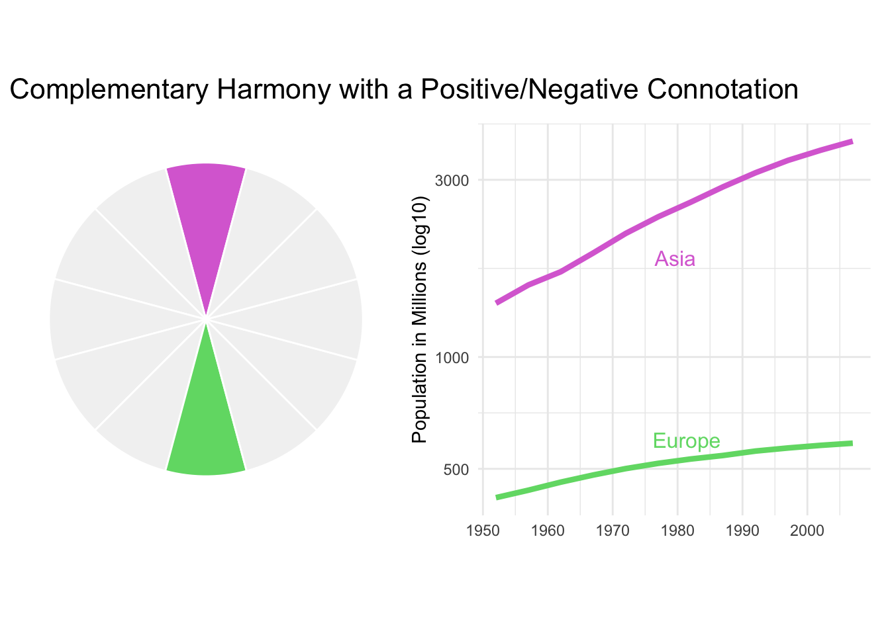
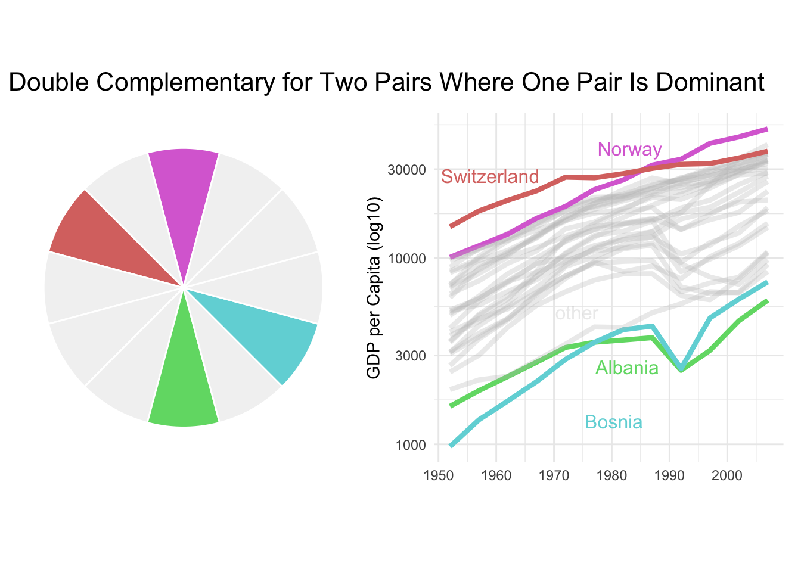
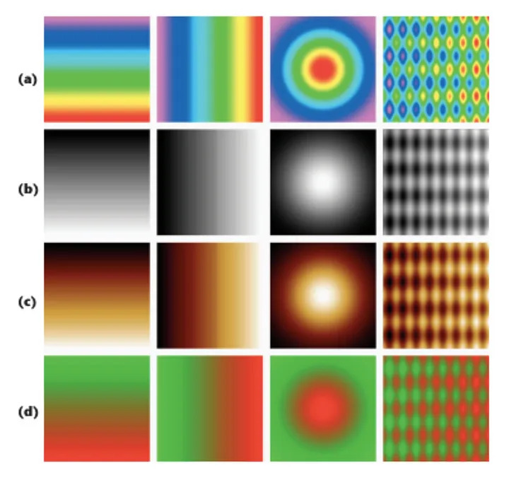
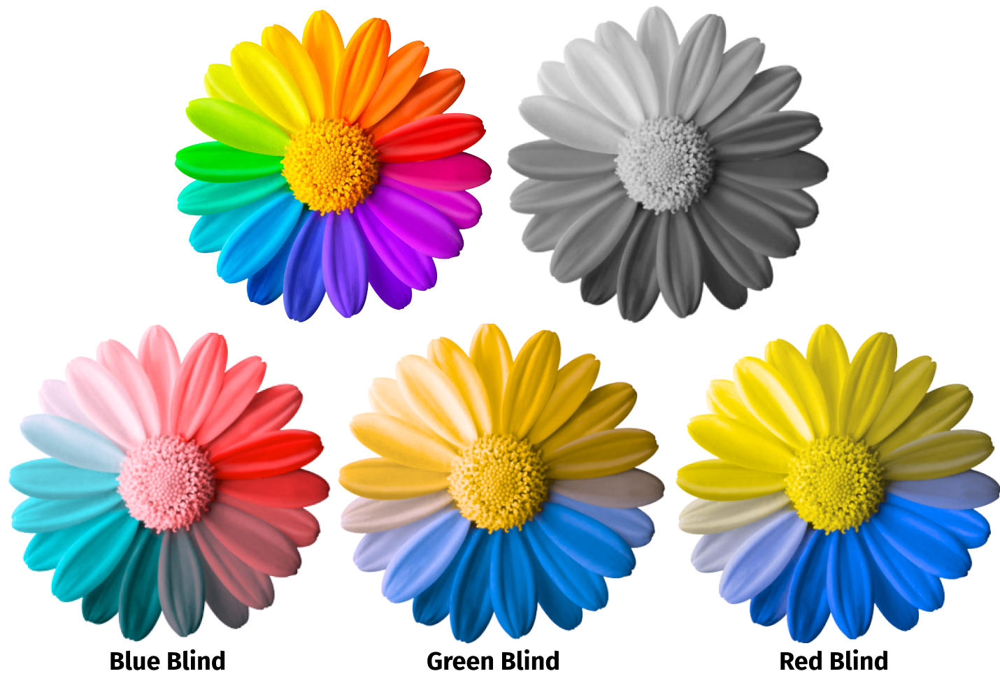

Color plays an essential role in data visualization. It holds the power to stir emotions, underline patterns, and convey information that may otherwise be challenging to communicate. The skillful application of color in data visualization can enhance a viewer’s understanding and engagement with the data, while inappropriate use may hide important details and lead to confusion. This discussion will guide you through the creation of various color schemes and palettes.
Color is a potent tool as it can convey information quickly and efficiently. By assigning different colors to distinct data points or categories, we can form visual patterns that are easier to understand and remember. Color can also be used to emphasize crucial trends or outliers. Furthermore, color can enhance the appeal of visualizations, helping to hold the viewers’ attention and increase their understanding and retention of the information.
Color can stimulate responses and influence people’s emotions and perceptions. For instance, in the U.S., red is often associated with danger or passion, blue with tranquility or sadness, and green with nature or health. Keep in mind that the cultural interpretations of colors vary, so color usage should be adjusted based on your audience’s perspective. The impact of color is considered so significant that since 1979, the locker room at Iowa’s Kinnick Stadium has been painted pink with the goal of lowering opponents’ testosterone levels.
Color is employed to underscore specific data and provide context. Consider the two graphs below, both of which compare the GDP of European countries in 1997. The first graph assigns each country a distinct color, resulting in a visual cacophony akin to an “explosion at a candy factory”. The second graph improves upon this by minimizing distractions. It highlights “Greece” and greys out the remaining countries. The use of “red” for Greece serves as a signal, hinting that its economic performance may be subpar.
Code
p1 <- gapminder1997eu %>%mutate(is.Greece = country =="Greece") %>%ggplot(aes(y =fct_reorder(country, gdpPercap), x = gdpPercap)) +geom_segment(aes(yend = country, xend =0, color = country), size =1, show.legend =FALSE) +geom_point(aes(color = country), show.legend =FALSE, size =3) +theme_minimal(base_size =12) +theme(panel.grid.major.y =element_blank(),panel.grid.minor =element_blank() ) +# ggplot2::scale_color_manual(values = c("#7286D3","#D37286")) +labs(x ="GDP per Capita", y =element_blank()) +coord_cartesian(expand =FALSE, clip ="off")p2 <- gapminder1997eu %>%mutate(is.Greece = country =="Greece") %>%ggplot(aes(y =fct_reorder(country, gdpPercap), x = gdpPercap)) +geom_segment(aes(yend = country, xend =0, color = is.Greece), size =1, show.legend =FALSE) +geom_point(aes(color = is.Greece), show.legend =FALSE, size =3) +theme_minimal(base_size =12) +theme(panel.grid.major.y =element_blank(),panel.grid.minor =element_blank() ) + ggplot2::scale_color_manual(values =c("grey", "#D37286")) +labs(x ="GDP per Capita", y =element_blank()) +coord_cartesian(expand =FALSE, clip ="off")p1 + p2 +plot_annotation(title ="Countries in Europe by GDP per Capita", theme =theme(plot.title =element_text(size =16)))
27.1.2 Comparing Two Things
27.1.2.1 Complementary Harmony with a Positive/Negative Connotation
Complementary Harmony involves the use of colors directly opposite each other on the color wheel, creating a stark contrast. This method effectively conveys a positive/negative connotation, ideal for emphasizing differences. While colors located near each other on the wheel can also complement each other, those placed in opposition offer the most substantial reinforcement for a key color. The illustration below compares the population growth of Asia and Europe. Here, the use of bright purple underscores the remarkable population surge in Asia, while the green tone underlines the comparatively slower growth in Europe.
Code
p3 <- continents %>%filter(continent %in%c("Asia", "Europe")) %>%ggplot(aes(x = year, y = total_pop_mil, color = continent)) +geom_line(linewidth =1.5) +theme_minimal() +theme(legend.position ="none") +scale_y_log10() +scale_color_manual(values =c("#DA70D6", "#70DA74")) +geom_dl(aes(label = continent), method ="smart.grid") +labs(x =element_blank(), y ="Population in Millions (log10)")complementary + p3 +plot_annotation(title ="Complementary Harmony with a Positive/Negative Connotation", theme =theme(plot.title =element_text(size =16)))

27.1.2.2 Near Complementary Harmony for Highlighting Two Series Where One Is the Primary Focus
Near Complementary Harmony is a color scheme that achieves substantial contrast without resorting to using colors diametrically opposite on the color wheel. Instead, it involves choosing a color located 33% around the wheel from the principal color, rather than a full 50% away. This method is effective when highlighting two series, one of which is the primary focus. It’s preferable to use warm colors for the key series and cool colors for the complementary ones. If required, the intensity of the complementary colors can be subdued by reducing their saturation or modifying their lightness, thereby lowering the contrast with the background. The example below underscores the significance of Asia’s population growth, while Europe is neutrally depicted as a comparative reference, not a region with slow growth.
Code
p4 <- continents %>%filter(continent %in%c("Asia", "Europe")) %>%ggplot(aes(x = year, y = total_pop_mil, color = continent)) +geom_line(size =1.5) +theme_minimal() +theme(legend.position ="none") +scale_y_log10() +scale_color_manual(values =c("#DA70D6", "#70D6DA")) +geom_dl(aes(label = continent), method ="smart.grid") +labs(x =element_blank(), y ="Population in Millions (log10)")triadic + p4 +plot_annotation(title ="Near Complementary Harmony for Highlighting \nTwo Series Where One Is the Primary Focus", theme =theme(plot.title =element_text(size =16)))
27.1.3 Color Palettes for Comparing Three Things
27.1.3.1 Analogous/Triadic Harmony for Highlighting Three Series
Analogous Complementary is a color scheme that employs four colors. It combines the key color and its complementary color with two colors adjacent to the complementary color on the color wheel. This scheme retains analogous harmony while forming a quartet of colors, suitable for highlighting one main data series and its three sub-components. The similarities among the three complementary colors render the key color more prominent. The example below depicts the “Malaysian Economic Miracle” by contrasting Malaysia’s economic growth with that of its three neighboring countries.
Code
p5 <- continents %>%filter(continent %in%c("Asia", "Europe", "Americas")) %>%ggplot(aes(x = year, y = total_pop_mil, color = continent)) +geom_line(size =1.5) +theme_minimal() +theme(legend.position ="none") +scale_y_log10() +scale_color_manual(values =c("#DA70D6", "#DA70A1", "#A970DA")) +geom_dl(aes(label = continent), method ="smart.grid") +labs(x =element_blank(), y ="Population in Millions (log10)")analogous + p5 +plot_annotation(title ="Analogous/Triadic Harmony for Highlighting Three Series", theme =theme(plot.title =element_text(size =16)))
27.1.3.2 Highlighting One Series Against Two Related Series
The Near Complementary Harmony color scheme is adept at highlighting one series against others. The following chart clearly emphasizes Asia’s GDP, represented by a vibrant purple. Conversely, Europe and the Americas, depicted in harmonizing greens, play a more subsidiary role in this narrative.
Code
p6 <- continents %>%filter(continent %in%c("Asia", "Europe", "Americas")) %>%ggplot(aes(x = year, y = total_gdppc, color = continent)) +geom_line(size =1.5) +theme_minimal() +theme(legend.position ="none") +scale_y_log10() +scale_color_manual(values =c("#A1DA70", "#DA70D6", "#70DAA9")) +geom_dl(aes(label = continent), method ="smart.grid") +labs(x =element_blank(), y ="GDP per Capita (log10)")complementary_3 + p6 +plot_annotation(title ="Highlighting One Series Against Two Related Series", theme =theme(plot.title =element_text(size =16)))
27.1.4 Color Palettes for Comparing Four Things
27.1.4.1 Analogous Complementary for One Main Series and Its Three Secondary
The Analogous Complementary scheme, involving four distinct colors, provides an excellent platform for highlighting a primary series along with three related components. With this scheme, the key color stands out due to the similarities among the three complementary colors. An illustration of this can be seen in the subsequent example showcasing the ‘Malaysian Economic Miracle’ alongside three neighboring countries.
Code
p7 <- malay_miracle %>%ggplot(aes(x = year, y = gdpPercap, color = country)) +geom_line(linewidth =1.5) +theme_minimal() +# scale_y_log10() +theme(legend.position ="none") +scale_color_manual(values =c("#A1DA70", "#DA70D6", "#70DA74", "#70DAA9")) +geom_dl(aes(label = country), method ="smart.grid") +labs(x =element_blank(), y ="GDP per Capita (log10)")complementary_4 + p7 +plot_annotation(title ="Analogous Complementary for One Main Series and \nIts Three Components", theme =theme(plot.title =element_text(size =16)))
27.1.4.2 Double Complementary for Two Pairs Where One Pair Is Dominant
The Double Complementary Harmony scheme is ideal for visualizing four data series divided into two distinct pairs. It involves the key color, an adjacent color, and their respective opposites on the color wheel. Warmer colors are suggested for the key and adjacent colors, with their complementary counterparts in cooler tones. This color arrangement effectively highlights one pair over the other. As demonstrated below, the 1952 GDPs of Switzerland and Norway form one group denoted in purple hues, while Bosnia and Albania, differentiated in green-blue, form the other group.
Code
p8 <- gapminder %>%filter((continent =="Europe")) %>%mutate(bot_top =case_when( country %in%c("Albania") ~"Albania", country %in%c("Bosnia and Herzegovina") ~"Bosnia", country %in%c("Switzerland") ~"Switzerland", country %in%c("Norway") ~"Norway", T ~"other" )) %>%ggplot(aes(x = year, y = gdpPercap, color = bot_top, group = country, alpha = bot_top)) +geom_line(linewidth =1.5) +theme_minimal() +theme(legend.position ="none", legend.title =element_blank()) +scale_y_log10() +geom_dl(aes(label = bot_top), method ="smart.grid") +scale_color_manual(values =c("#70DA74", "#70D6DA", "#DA70D6", "grey", "#DA7470")) +scale_alpha_manual(values =c(1, 1, 1, 0.3, 1)) +labs( # title = "Growth of the bottom 2 and \ntop 2 countries by GDP in 1952",x =element_blank(), y ="GDP per Capita (log10)" )tetradic + p8 +plot_annotation(title ="Double Complementary for Two Pairs Where One Pair Is Dominant", theme =theme(plot.title =element_text(size =16)))

27.1.4.3 Rectangular or Square Complementary for Four Series of Equal Emphasis
The Rectangular or Square Complementary scheme suits data visualization of four series with equal emphasis. Differing from the double complementary scheme, it includes the key color, its complement, and two additional colors to form a rectangle or square on the color wheel. This results in distinctive colors for each of the four series. While similar to double complementary, this scheme is optimal when all series share equal importance. For instance, in the graph below, the “Four Asian Tigers”—Hong Kong, Singapore, South Korea, and Taiwan—are shown. These economies, rapidly developed from the 1960s to 1990s, are all equally significant in illustrating the dynamism of East Asia’s growth.
Code
p9 <- asian_tigers %>%ggplot(aes(x = year, y = gdpPercap, color = country)) +geom_line(linewidth =1.5) +theme_minimal() +theme(legend.position ="none") +scale_y_log10() +scale_color_manual(values =c("#DA70D6", "#DAA970", "#70DA74", "#70A1DA")) +geom_dl(aes(label = country), method ="smart.grid") +labs(x =element_blank(), y ="GDP per Capita (log10)")square + p9 +plot_annotation(title ="Rectangular or Square Complementary for \nFour Series of Equal Emphasis", theme =theme(plot.title =element_text(size =16)))
27.2 Sequential and Divergent
Sequential colors utilize a gradient from light to dark, mapping numeric values based on hue or lightness. Depending on the background, lower values receive lighter colors, while higher ones get darker shades. You can use a single hue or a sequence thereof.
Let’s apply our beloved purple to GDP of different countries.
Diverging color schemes are employed when the numeric variable possesses a significant central value like zero. This scheme combines two sequential palettes with a common end, centering on the central value. Positive values receive colors from one side of the spectrum, while negative ones are designated colors from the other. The central value should ideally be a light shade, allowing darker colors to signify greater deviation from the center. Simplicity is key here to prevent diluting the intended meaning and confusing viewers. Rightly chosen, colors can minimize cognitive load, facilitating comprehension of complex data.
Prebuilt color scales such as “Viridis” are crafted for perceptual uniformity, ensuring visual appeal and ease of interpretation. These provide a standard, uniform color scheme, thus obviating the need for custom creation and testing. Moreover, they aid individuals with color blindness in interpreting data visualizations, owing to their consistent visual contrast. By employing prebuilt color scales, data visualizations can be made accessible to a broad audience.
Several popular color systems are commonly used in digital design and data visualization. The standard color space for displaying images and graphics on digital displays is the sRGB color system, a device-dependent color space designed to provide consistent color reproduction across a wide range of devices. The HCV color system, based on hue, chroma, and value, is employed to create visually distinct color palettes for use in data visualization. The HSL color system, founded on hue, saturation, and lightness, is frequently used to devise color palettes for web design and user interfaces. Meanwhile, the LAB color system is a device-independent color space intended to accurately represent colors across various devices and environments; this system often finds use in professional printing and color management applications. Each of these color systems has its unique strengths and weaknesses, with the choice depending on the specific needs of the project.
To see how these spaces look, check out this amazing video!
27.3.1 HSL
The HSL color system characterizes colors employing three parameters: hue, saturation, and lightness. Hue, designated by a value from 0 to 360 degrees on the color wheel, determines the fundamental color of the pixel. Saturation denotes the purity of the hue, representing the degree of gray mixed into the color. Values for saturation range from 0% (gray) to 100% (pure hue). Lightness, conversely, symbolizes the proportion of white or black mixed with the color, with 0% being black, 50% being the pure color, and 100% being white. Despite its usefulness in graphic design and web development, the HSL system has some constraints, such as not being perceptually uniform, which means that changes in the numeric values of the parameters may not correlate to equal changes in the perceived color.
27.3.2 HSV
The HSV color system describes colors using three parameters: hue, saturation, and value. Hue and saturation function the same way as in the HSL system. Value signifies the brightness of the pixel, with 0% being black and 100% being the brightest possible color. Like the HSL system, the HSV system also suffers from a lack of perceptual uniformity.
27.3.3 HCL
The HCL color system, a perceptually uniform color space, is frequently employed in data visualization and scientific applications. It comprises three values: hue, chroma, and lightness, which symbolize the color, saturation, and brightness of a color respectively. Owing to its capability to emulate human perception of color, the HCL color space is garnering increased popularity in design and user interface applications.
27.3.4 LAB
The LAB color system, a device-independent color space designed to represent colors accurately across various devices and environments, comprises three parameters: L (lightness), a (position between red/magenta and green), and b (position between yellow and blue). The LAB color space finds frequent use in professional printing and color management applications due to its ability to enable accurate color matching across diverse devices and environments. Some of the newer LAB color spaces (e.g., OKLAB) are perceptually uniform, meaning that equal distances in the LAB color space correspond to equal increments in perceived color difference.
27.3.5 OKLAB
OKLAB is a color space engineered to be more perceptually uniform than other color spaces like sRGB or LAB. It employs an opponent color model, encoding color information as L – perceived lightness, a – the green/red aspect of the color, and b – the blue/yellow aspect of the color. This allows the OKLAB color space to represent colors accurately while maintaining perceptual uniformity. OKLAB is growing in popularity in digital design and data visualization due to its enhanced accuracy and consistency in color representation.
For a deeper understanding of OKLAB and other color spaces, the blog posts on OKLAB and Colorpicker offer excellent insights.
27.3.6 Perceptual Uniformity
Humans perceive colors differently than machines. For instance, a color that seems similar to a machine might not appear so to a human. The images below illustrate this concept using two color wheels, one RGB (perceptually non-uniform) and the other HCL (uniform). When viewed in grayscale, the non-uniform nature of the RGB color wheel becomes apparent. Technically, a perceptually uniform color space ensures that the difference between two colors, as perceived by the human eye, is proportional to the Euclidean distance within the given color space.
uniform perception
27.3.6.1 Warning: Colormaps Might Increase Risk of Death!
In the 1990s, data visualization specialists adopted the Rainbow Color Map, the most renowned variation being the Jet default palette. However, researchers expressed concerns over its non-uniform nature, which introduced transitions that could be misperceived.
Rogowitz and Treinish voiced their concerns about the Rainbow Color Map in their 1998 article, “Data Visualization: The End of the Rainbow” (Rogowitz and Treinish 1998), and Borland and Taylor highlighted further concerns in their 2007 paper, “Rainbow Color Map (Still) Considered Harmful” (Borland and Taylor Ii 2007). In 2011, Borkin et al. conducted user studies on various color maps, including the Rainbow Color map, within medical visualization contexts. Their findings, published in “Evaluation of Artery Visualizations of Heart Disease Diagnosis” (Borkin et al. 2011), demonstrated that a perceptually uniform color map resulted in fewer diagnostic errors than the Rainbow Color map. Simply put, using a proper color palette could decrease diagnostic errors. Yet, as outlined by Crameri, Shephard, and Heron in their 2020 article, “The misuse of colour in science communication” (Crameri, Shephard, and Heron 2020), the improper use of color persists in science, making this a must-read article for any scientist.
Rogowitz, B. E., and L. A. Treinish. 1998. “Data Visualization: The End of the Rainbow.”IEEE Spectrum 35 (12): 52–59. https://doi.org/10.1109/6.736450.
Borland, David, and Russell M. Taylor Ii. 2007. “Rainbow Color Map (Still) Considered Harmful.”IEEE Computer Graphics and Applications 27 (2): 14–17. https://doi.org/10.1109/MCG.2007.323435.
Borkin, M., K. Gajos, A. Peters, D. Mitsouras, S. Melchionna, F. Rybicki, C. Feldman, and H. Pfister. 2011. “Evaluation of Artery Visualizations for Heart Disease Diagnosis.”IEEE Transactions on Visualization and Computer Graphics 17 (12): 2479–88. https://doi.org/10.1109/TVCG.2011.192.
Crameri, Fabio, Grace E. Shephard, and Philip J. Heron. 2020. “The Misuse of Colour in Science Communication.”Nature Communications 11 (1): 5444. https://doi.org/10.1038/s41467-020-19160-7.

Image from the “Rainbow Color Map (Still Considered Harmful)
These issues intensify when considering colorblind individuals. Approximately 8% of all men and 0.5% of all women are colorblind. There are three main forms of colorblindness: protan (red), deutan (green), and tritan (blue), each corresponding to color-sensitive cones in our eyes. To check whether your visualization is colorblind-friendly, use Coblis(“Coblis Color Blindness Simulator Colblindor,” n.d.).
Improving the readability of your colors involves varying their value and hue, but avoid including both red and green in your graphics as red-green color blindness is the most common form.

Color Blind Rainbow Flower
27.3.6.2 So, What Should You Use?
A simple and correct answer would be to use a scientific color map that you find appealing and make it your default. If you need help, this graph from “The misuse of colour in science communication” might be useful.
choosing color map
If you want to select colors yourself, use HSL, as it is the most intuitive and easiest to use in creating color palettes. You might also want to experiment with OKHSL, a child of OKLAB and HSL that produces a perceptually uniform HSL space. Try out both of them and observe the difference here1.
1 https://bottosson.github.io/misc/colorpicker/
27.3.7 Where Can I Find Color Waves?
Adobe Color - Adobe Color allows you to create color palettes using different color harmony rules and color modes. You can also select colors from your image, create gradients from images, and test for accessibility.
Paletton - This is a fantastic tool for creating color palettes.
Color Brewer - Color Brewer provides perceptually uniform color schemes for maps and data visualizations.
Color Thief - Color Thief lets you extract colors from your image to create nature-inspired palettes.
Viz Palette - Viz Palette can be used to check your color palettes before creating visualizations. It allows you to view color sets in example plots, simulate color deficiencies, and modify the colors of your palette.
Scientific colour maps - This is a collection of uniform and readable color maps for scientific use.